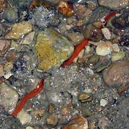
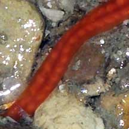
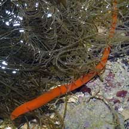
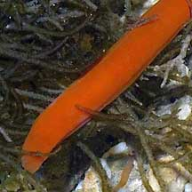

|
|
| worms text index | photo index |
| worms > Phylum Nemertea |
| Red
reef ribbon worm awaiting identification* updated Jan 2020 Where seen? This short red ribbon worm is commonly seen at night in coral rubble and near reefs. Many of of these worms can be glimpsed among seaweeds at night, extending their bodies out of hiding places.They retract instantly as soon as light shines on them, or they feel a disturbance. You only get one chance at a flash photo of them! Features: Grouped in this entry are ribbon worms that are rather short 10-15cm with broad flat bodies uniformly coloured red or orange usually without any dark markings. |
|
 Sisters Islands, Feb 06  |
 Labrador, Jan 05  |
*Species are difficult to positively identify without close examination.
On this website, they are grouped by external features for convenience of display.
| Red reef ribbon worms on Singapore shores |
On wildsingapore
flickr
|
| Other sightings on Singapore shores |